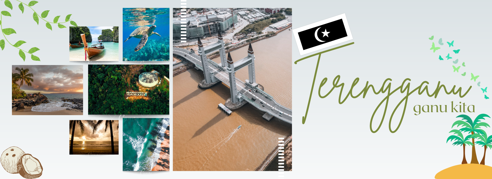

HOME
ABOUT US
PROMOTION
CONTACT US
Cuti-Cuti Malaysia
1 / 6
2 / 6
3/ 6
4 / 6
5 / 6

6 / 6
DARK MODE
×
Perlis
Kedah
Pulau Pinang
Perak
Selangor
Kuala Lumpur
Melaka
Negeri Sembilan
Johor
Pahang
Terengganu
Kelantan
☰
PENINSULAR DOMESTIC TOURISM PERFORMANCE BEFORE AND AFTER COVID-19 PANDEMIC
Chat
Chat
Message
Send
Close